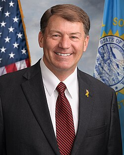

Mike Rounds
U.S. Senator from South Dakota

Republican co-sponsor of the 2023 UAP Disclosure Act with Chuck Schumer, and a continued advocate for UAP records disclosure. 1
Open in the interactive Watcher
Related
- UAP Disclosure Act Co-sponsored the UAP Disclosure Act
Sources
- UAP Disclosure Act Wikipedia